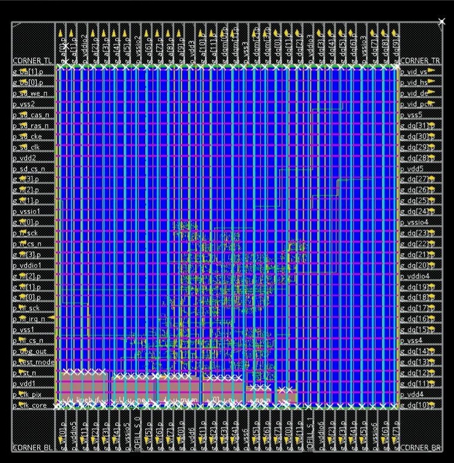
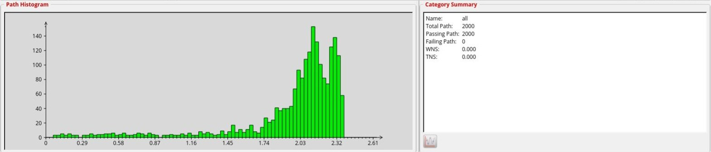
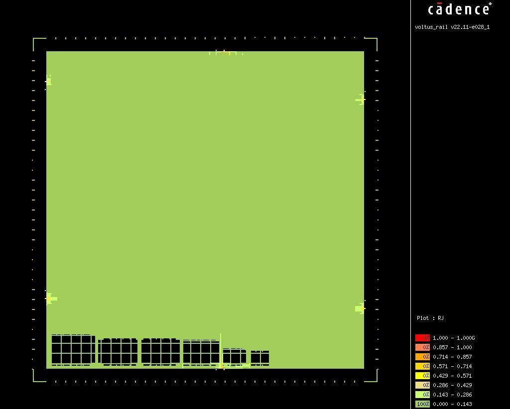
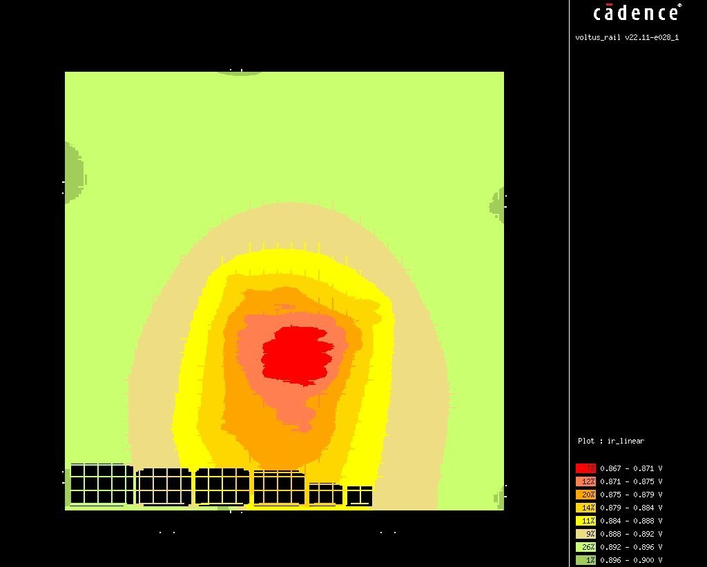
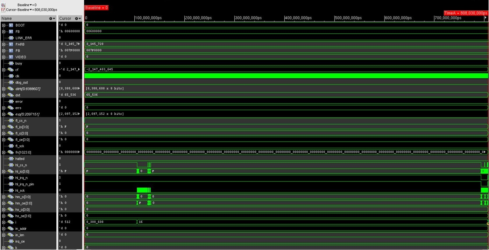
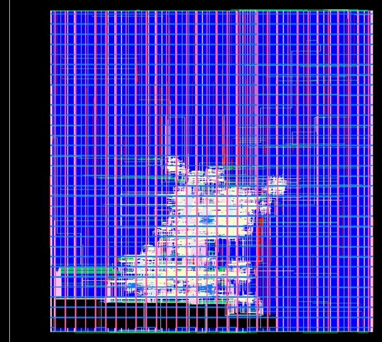

SQA V2 chip: hot memories inside
The smallest accelerator chip: the hot engine buffers moved on-chip as SRAM macros and the weights streamed from SDRAM.
Screenshot proofs
The Innovus, Tempus and Virtuoso pictures come from the database two small steps before the final layout (one pad pin reconnected after LVS, then the EM-fix stripes); the EM maps show the layout before and after the fix.







Overview
V2 brings the frequently used engine buffers (input windows, line buffer, requant and index tables) onto the chip as six SRAM macros. Engine B's big weight tile (1.18 Mbit) was removed instead: its weights are re-streamed from the external SDRAM by a small DMA with prefetch, which saves about 0.97 mm² of SRAM.
The result is the smallest of the accelerator chips (2.4 mm per side, 126 pads) with only four parts on the board: V2, the RISC-V controller chip, an SDRAM and a flash.
This is an academic practice design on Cadence's generic GPDK045 45 nm PDK. It is fully signed off in the Cadence tools but it has not been fabricated. The SRAM macros are my own placeholder models (behaviour, estimated timing / area / power, outline and pins), because the generic PDK has no memory compiler.
V2's six SRAM macros and the weight-streaming decision are explained in Memory design.
Headline numbers
Architecture
| Block | What it does |
|---|---|
| Accelerator core | Engines A / B / AUX with shared lookup and requant tables; Engine B fed by a weight-stream DMA |
| 6 SRAM macros | requant table 2048 × 24, two input windows 4608 × 8, pool line buffer 6400 × 8, gate codes 2048 × 8, tap index 768 × 13 |
| SDRAM controller | 32 MB x32 SDR SDRAM at 100 MHz with stream read ports (program, video, weights) |
| Boot loader + QSPI flash reader | stand-alone boot from flash |
| Host-link slave + register block + bus mux | commands from the RISC-V controller chip |
| Program fetch | descriptor fetch with prefetch |
| Display controller | 1080p60 output with text overlay, pixel clock 148.5 MHz |
| Clock-domain crossing | async FIFOs and synchronisers between the two clocks |
Key specifications
| Parameter | Value |
|---|---|
| Technology | GPDK045 (Cadence generic 45 nm PDK), gsclib045 standard cells, giolib045 I/O pads |
| Die size | 2.4 × 2.4 mm (pad-limited, 32 pads per side) |
| Core area | 1.9 × 1.9 mm |
| Pads | 126 = 102 signal + 24 power |
| Signal pins by interface | SDRAM 56, video 28, host link 7, QSPI flash 6, clocks + reset 3, test 2 |
| Cells | 103,665 after synthesis; 114,718 standard cells after P&R incl. clock tree (301,746 µm²), core density 8.8 % |
| Synthesis area | 2.26 mm² including pads (pads 80 %) |
| Memories inside | 6 SRAM macros (placeholder models), placed in one row along the bottom of the core |
| Clocks | core 100 MHz, pixel 148.5 MHz |
| Supply / corners | 1.0 V nominal core library; signed off at 0.9 V / 125 C (slow, setup) and 1.1 V / 0 C (fast, hold) |
| Parts on the board | 4: V2 + RISC-V controller + SDRAM + flash |
| Test network run (synbk3, RTL) | 66,143 cycles |
Design flow
All steps use Cadence tools on a university server; HLS and firmware builds ran on a PC.
- RTL design: Verilog RTL; the neural-network engines were generated with Vitis HLS from C++ and checked bit-exact against a Python golden model.
- RTL simulation: Xcelium (and Vivado xsim on the PC) with my own board models: SDRAM, sync SRAM, QSPI flash, UART, SD card, I2C, display capture.
- Synthesis: Cadence Genus to the gsclib045 standard cells, 100 MHz core clock, slow corner.
- Place and route: Cadence Innovus: pad ring, floorplan, power grid, placement, clock-tree synthesis, routing, post-route optimisation.
- Physical verification: Cadence Pegasus DRC with the full GPDK045 rule deck, and Pegasus LVS (layout against netlist).
- Static timing: Cadence Tempus, SI-aware, with extracted parasitics: setup in the slow corner, hold in the fast and slow corners, plus every design-rule check type (slew, capacitance).
- Power and rail analysis: Cadence Voltus: power with real gate-level activity, static IR drop, electromigration (EM) and dynamic IR drop.
- Gate-level sign-off simulation: The routed netlist simulated again in Xcelium, with and without the routed delays (SDF back-annotation, all timing checks on).
Results
| Check | Result |
|---|---|
| Pegasus DRC (full GPDK045 deck) | clean (46 foundry-deck hits on the first run, all fixed); only the expected substrate soft checks |
| Pegasus LVS | MATCH (105 pins, 321,801 nets); LVS found 1 floating bond pad (sd_cs_n), fixed |
| Tempus sign-off timing (SI on) | setup WNS +0.076 ns, hold WNS +0.040 ns, TNS 0, 0 violators of every check type; 135 slew violators at the start, fixed by targeted driver upsizing |
| Power (Voltus, real activity, slow corner) | 6.16 mW |
| Static IR drop (budget 45 mV) | VDD ~4 mV (0.896 V minimum), VSS 3.7 mV: 12x margin |
| Electromigration (Voltus) | PASS after the fix: first final candidate had 10 power-wire pieces over the limit (worst 1.36x); after the fix worst J / Jmax 0.956 (VDD), 0.826 (VSS), 0 over |
| Dynamic IR drop (budget 45 mV) | PASS: worst VDD drop ~33 mV, VSS bounce 33.7 mV (highest of the four: most switching in the smallest die) |
| Post-route gate-level simulation | PASS: synbk3 through the chip pins, 512 / 512 output bytes bit-exact, 66,153 cycles (RTL 66,143) |
| Gate-level simulation with routed delays (SDF) | PASS: 0 errors, 0 timing-check violations; 100 % of path delays and 99.7 % of timing checks annotated |
Problems solved
IR-clean is not EM-clean. The static IR drop was tiny (about 4 mV), yet Voltus electromigration found 10 power-wire pieces over the foundry current limit (worst 1.36x): thin 0.4 µm Metal4 stripes between the core ring and the first Metal7 strap, right beside the two bottom supply pads, carried most of each pad's current. Fix: 16 extra 1.0 µm Metal4 stripes in that band, then the whole sign-off again (DRC, LVS, timing, IR, EM, simulation): 0 pieces over the limit.
Slew violations after many reroutes. The DRC fix rounds rerouted nets without optimisation. Global DRV optimisation stalled because Innovus and Tempus disagreed on the same pins; targeted upsizing of the driving cells, iterated upstream, converged in 3 rounds.
85 open power-rail stubs. One 14 µm strip between two macros had no power stripe and 10 cells sat there. A small stripe-and-via ECO fixed it; the floorplan generator now blocks cells in macro gaps, so V1 and V3 never had the problem.